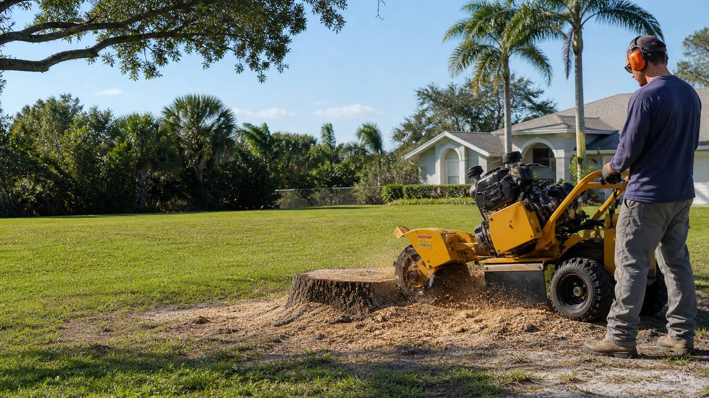
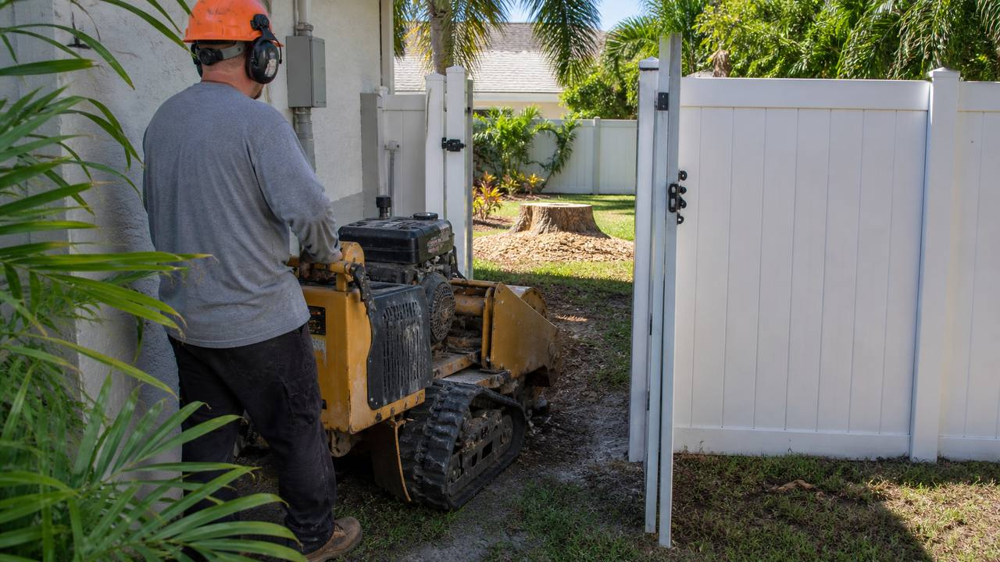
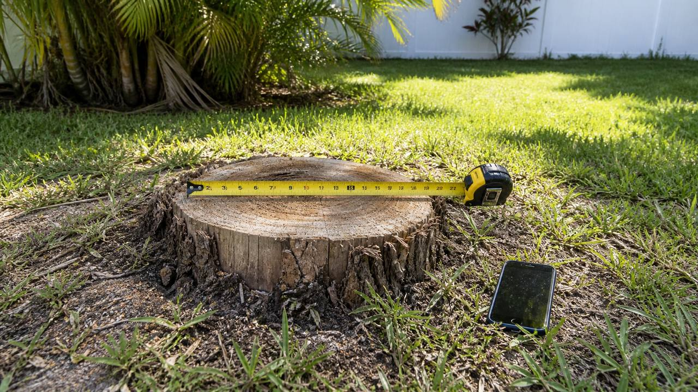

Stump Grinding in Melbourne, FL
Local stump grinding and tree stump removal quote requests for Melbourne, West Melbourne, Palm Bay, Viera, Rockledge, Cocoa, Merritt Island, Titusville, beachside Brevard, and nearby Space Coast neighborhoods.
- Photos help with faster estimates
- Access, roots, and cleanup options considered
- Space Coast focused, Brevard County service area

Free Stump Grinding Quote
Residential stump grinding for Melbourne and nearby Brevard County
Clear the stump without tearing up the whole yard
Old stumps are more than an eyesore. They make mowing harder, create trip hazards, attract insects and moisture, and block sod, fencing, patios, driveways, and landscaping projects. Stump grinding is usually the practical middle ground for homeowners who want the stump lowered below grade without excavating the entire root system.
Most quote requests are straightforward, but the details matter. A small front-yard palm stump with open driveway access is different from a large oak stump behind a narrow gate, a cluster of pine stumps after storm cleanup, or a stump surrounded by irrigation, landscape lighting, pool screens, pavers, and decorative beds. The more useful the request is, the easier it is to give a realistic quote before anyone drives across the county.
Single stump grinding
Good for one leftover oak, palm, pine, or ornamental stump after tree removal. Send the diameter, height, access notes, and photos for a cleaner estimate.
Multiple stump cleanup
Useful after clearing a lot, removing storm-damaged trees, or cleaning up an older property. Bundling several stumps is often more efficient than separate trips.
Backyard and side-yard access
Gate width, slope, turns, fences, irrigation, pool screens, and landscaping all affect whether a grinder can reach the stump safely.
Palm stump grinding
Common around Florida landscape beds, walkways, and pool areas. Palm root balls and chip cleanup should be discussed before the quote.
Oak stump grinding
Oak stumps can have harder wood, wide root flare, and surface roots near sidewalks, driveways, or sprinkler systems.
Clean-up options
Some homeowners keep chips to fill the hole or use as mulch. Others want the area raked, leveled, or cleaned more thoroughly.

Quote process
Call or text photos for a stump grinding quote
A stump photo can answer questions that a short form cannot. Photos show the stump diameter, how high it sits above grade, whether there is root flare, whether it is near concrete or a fence, and whether there is open access for equipment. If the stump is in the backyard, a photo of the gate and the path to the work area is just as useful as a photo of the stump itself.
- Send the basics. Include your city, number of stumps, approximate size, and whether the stump is in the front yard, backyard, side yard, or near a driveway.
- Add access notes. Mention fences, gates, steps, pool enclosures, soft ground, narrow turns, sprinklers, lighting, pets, or parked vehicles.
- Clarify cleanup. Say whether chips can stay, should be spread, should be raked into the hole, or whether a cleaner finish is important.
- Explain timing. Mention if the work is tied to sod, landscaping, a fence install, storm cleanup, a home sale, or another contractor schedule.
Best photos to send

- One wide photo showing the stump and surrounding yard.
- One close photo showing diameter and root flare.
- Gate opening or side-yard path if access is tight.
- Nearby concrete, fence, pool screen, irrigation, lighting, or landscaping.
Stump grinding vs full stump removal
Stump grinding and stump removal are often used interchangeably by homeowners, but they are not the same job. Stump grinding chips the visible stump down below ground level. The underground root system is generally left to break down over time. Full stump removal means excavating the stump and major roots, which creates more ground disturbance and is usually more involved. For normal lawn cleanup, mowing, mulch beds, sod, or appearance issues, grinding is often the less disruptive option. If you are building a structure, setting fence posts, pouring concrete, or planting another tree in the exact same spot, say that clearly before the quote. The right scope depends on what you want to do with the area after the stump is gone.
What affects stump grinding cost in Brevard County?
There is no honest one-price-fits-all number without seeing the stump and the property. The biggest factors are stump diameter, stump height, wood hardness, root flare, visible surface roots, number of stumps, equipment access, cleanup expectations, and travel. A front-yard stump near the driveway is usually simpler than a large backyard stump behind a fence. Multiple stumps may be more efficient when they can be handled in one visit, but they still need to be counted and described. Chips left on site are different from a cleaner rake-out or haul-away request. Nearby concrete, pavers, pool screens, irrigation, landscape lighting, fences, and house foundations require more care. Read the Brevard County stump grinding cost guide for the deeper breakdown.
Backyard and narrow access stump grinding
Backyard stumps are common in Melbourne, West Melbourne, Palm Bay, Viera, and Rockledge. They also create the most quote questions because access is not always obvious from the street. A grinder may need to pass through a gate, turn around a house, cross a side yard, avoid soft soil, work near a pool screen, or stay clear of landscape beds and irrigation. Measure the narrowest gate opening if possible. If there are steps, a steep slope, tight corners, pavers, raised beds, drainage areas, or a narrow side yard, include that in the request. A quote that accounts for access is more useful than a quote based only on stump diameter. See the backyard stump grinding page for a dedicated access checklist.
Palm, oak, and pine stump notes
Florida yards often have palm, oak, pine, and ornamental stumps. Palm stumps are common in landscape beds and around pool areas; the root ball, moisture, and cleanup expectations matter. Oak stumps can be harder, wider, and more likely to have a visible root flare or surface roots near sidewalks, driveways, and sprinklers. Pine stumps are common after storm cleanup and lot clearing, especially when several trees were removed at once. The species does not need to be perfect in the first message, but if you know what kind of tree it was, include it. If you do not know, photos are enough for a better first look.
Local yard conditions in Melbourne and Brevard County
Brevard County properties are not all the same. Established Melbourne and West Melbourne neighborhoods often have fenced backyards, irrigation systems, pool screens, older shade trees, and stumps left after gradual tree work. Palm Bay homes may have larger lots, multiple stumps, sandy soil, and cleanup needs after clearing or storms. Viera and Rockledge quote requests often involve clean front yards, sidewalks, HOAs, newer landscaping, and careful finish expectations. Merritt Island, Cocoa, and beachside properties can involve tighter lots, wind-exposed landscaping, and access around driveways, patios, or pool enclosures. Local details like these should be included in the quote request because they affect scope more than a generic city name.
What happens after the stump is ground?
Grinding produces a mix of wood chips and soil where the stump used to be. Many homeowners leave the chips in the hole temporarily, use them as mulch, or spread them in a bed. If you want grass, sod, or a cleaner planting area, expect some settling and soil work after grinding. Chips can hold moisture, so some homeowners prefer to remove excess chips near structures or sensitive landscape areas. If the goal is immediate sod, a new planting bed, a fence, or a patio project, say that before the quote. The finish can be discussed more clearly when the end use is known.
When stump grinding may not be enough
Stump grinding is a strong fit for many residential cleanup projects, but it is not the right answer for every construction or utility situation. If the stump is in the path of a foundation, driveway, pool, deep fence post, drainage project, or major replanting area, full excavation or a different contractor scope may be needed. If underground utilities, irrigation, septic, drainage, or lighting are nearby, those details should be identified before work. If the yard is too wet or soft, access can change. Honest scope up front prevents a simple stump quote from turning into the wrong service.
How to prepare before the appointment
Move hoses, toys, patio furniture, potted plants, yard decor, and loose debris away from the stump when possible. Unlock gates, keep pets inside, and make sure parked vehicles do not block the access path. Mark sprinkler heads, lighting, irrigation, invisible fence lines, or shallow utilities if you know where they are. If someone does not need to be home, access and scope still need to be clear. If the stump is near a fence, pool screen, patio, driveway, sidewalk, house, or landscape bed, mention it in the request and include a photo.
Service areas
Stump grinding quote requests across the Space Coast
The primary target is Melbourne, FL, with nearby Brevard County areas covered through specific local and service-intent pages.
Stump grinding for sod, mulch beds, fencing, and yard projects
A stump is often noticed because it is in the way of another project. Homeowners call after a tree service has left the trunk cut low, after a storm has changed the yard, or before a landscaper starts sod, mulch, fencing, irrigation repair, or a small hardscape project. The best stump grinding quote starts with the next use of the space.
If the area will become lawn, the important details are grinding depth, chip management, settling, and whether additional soil will be needed before sod or seed. Grinding leaves chips and loosened material where the stump was. That material can settle over time. If the goal is a smooth lawn, the area may need to be cleaned, filled, leveled, and prepared after the grinding work. A homeowner who only needs to stop hitting the stump with a mower may need a different finish than someone installing fresh sod next week.
If the area will become a mulch bed or landscaping area, chips may be useful, but they still need to be managed. Too many chips in one spot can sit high, hold moisture, or interfere with planting. If shrubs, palms, ornamental trees, or pavers are planned, mention whether the grinder needs to work deeper or cleaner than a normal below-grade cleanup. If the stump is close to existing plants, irrigation, edging, or lighting, those items should be visible in the photos.
If the stump is close to a future fence, gate, patio, walkway, driveway repair, or post hole, be specific. Normal stump grinding does not excavate the entire root system. If a contractor needs a clear hole for a post or footing, a deeper or different scope may be needed. The quote should not assume that normal grinding is enough for construction. It is better to ask before scheduling than to discover after the work that the remaining roots affect the next contractor.
Questions homeowners ask before choosing stump grinding
Homeowners often want to know whether the stump will grow back. Once the stump is ground and the tree is no longer viable, regrowth is usually less of a concern, but species and root behavior vary. Some trees send up suckers from remaining roots. If sprouts are already visible, mention that when requesting a quote. Grinding addresses the stump; it is not the same as treating every root in the yard.
Another common question is whether stump grinding will make a mess. Grinding is dusty, loud, and produces chips. That is normal. The question is what level of cleanup is expected afterward. A basic grind may leave chips in the hole. A cleaner finish may involve raking or moving chips. Haul-away, if offered, is a separate cleanup expectation and should be discussed before pricing.
Homeowners also ask whether the work can happen if they are not home. That depends on access and arrangements, but the property still needs to be ready. Gates need to be unlocked, pets kept inside, and the stump clearly identified if there are multiple trees or old stumps on the property. If the wrong stump could be confused with another stump or root mass, mark it or include clear photos.
People also ask whether utility location is needed. Stump grinding is generally shallow compared with excavation, but irrigation, landscape lighting, invisible fence lines, drainage pipes, and private lines can be close to the surface. If you know anything is nearby, mention it. If you are unsure and the stump is close to utilities, hardscape, or structures, that should be part of the quote conversation.
Why a stump-specific site can be easier than calling every tree company
Tree companies, landscapers, and general yard contractors may all talk about stumps, but homeowners often need a narrow answer: can this stump be ground, what details are needed, and how do I get a quote without a long back-and-forth?
That is why this site is focused on stump grinding and tree stump removal quote requests instead of every possible tree or landscaping service. The form asks for city, phone, stump count, email, and job notes because those are the details that make the first response more useful. The pages explain access, cleanup, roots, palm stumps, oak stumps, cost factors, storm cleanup, and service areas because those are the questions homeowners usually have before they are ready to call.
This does not mean every stump is the same or every job can be priced from a photo alone. It means the first request can be organized. A homeowner in West Melbourne with one front-yard palm stump should not have to describe the job the same way as a Palm Bay homeowner with six pine stumps after a cleanup or a Viera homeowner with an oak stump beside a sidewalk and irrigation line. Specific pages help match the quote request to the real situation.
Use the phone number if the request is simple or if photos are ready to text. Use the form if you want to write out the details, include the city, and explain timing. Either way, the best first message includes stump count, approximate diameter, access notes, cleanup expectations, and any nearby items that should be avoided.
Local examples of quote details that help
Melbourne backyard oak stump
Useful details: gate width, stump diameter, surface roots, distance from pool screen, sprinkler heads, whether chips can stay, and whether sod is planned afterward.
Palm Bay multiple pine stumps
Useful details: number of stumps, whether they are grouped together, driveway access, soft or sandy ground, storm debris nearby, and whether a bundled cleanup quote is needed.
Viera front-yard palm stump
Useful details: HOA or appearance timing, proximity to sidewalk or driveway, landscape bed edges, irrigation, and whether the area needs to be ready for new mulch or planting.
Merritt Island side-yard stump
Useful details: side-yard width, fence or gate access, wet ground, nearby pavers, pool equipment, drainage, and whether the grinder can access the stump without crossing delicate areas.
Rockledge stump near concrete
Useful details: distance to driveway, sidewalk, patio, or curb; visible roots under the concrete edge; and whether only the stump or roots near the hardscape should be considered.
Beachside storm cleanup stump
Useful details: whether tree debris has already been removed, if the stump is accessible, wind-damaged landscape beds, narrow lot access, and cleanup expectations after grinding.
Common stump grinding requests around Melbourne
The most common requests are not always described the same way. One homeowner may say stump removal, another may say stump grinding, and another may say they need a tree stump gone before sod, fencing, mulch, or a driveway repair. The quote process should translate that request into a clear scope.
One stump after tree removal
This is the simplest request when access is open and chips can stay. A diameter photo and city are usually the most important first details.
Old stumps around the yard
Older properties may have several low stumps that keep catching mower blades. Count each stump and send wide photos so the full cleanup is visible.
Stumps blocking landscaping
If sod, mulch, a fence, a patio, or a new planting bed is planned, explain the end goal so grinding depth and cleanup expectations are clear.
Storm cleanup leftovers
After tree debris is removed, the remaining stump may still block mowing and yard repair. Mention whether other debris is still near the work area.
Surface roots near the stump
Visible roots may be part of the quote, but they should be photographed. Roots near concrete, irrigation, or utilities need extra care and clear expectations.
Backyard stumps behind fences
Gate width, turns, slope, wet ground, pool screens, and landscape beds can matter more than the stump itself. Include access photos.
How to describe your stump so the quote is useful
A useful quote request does not need professional measurements. It needs practical detail. Start with the city or neighborhood because travel and service area matter. Count the stumps, then estimate each diameter across the widest visible part. If you can place a tape measure, shoe, rake, or other familiar object near the stump for scale, the photo becomes easier to read. Mention whether the stump is freshly cut, rotting, flush with the ground, tall above the ground, surrounded by roots, or partly covered by soil and grass.
Access is the second major detail. Say whether the stump is in the front yard, side yard, backyard, fenced area, near a pool screen, beside a driveway, inside a landscape bed, or close to a patio. If the grinder must pass through a gate, send the gate width or a clear photo. If the property has a narrow side yard, tight turn, slope, steps, wet ground, low branches, or pavers, include that too. These details help avoid a quote that only works on paper.
Finally, describe what you want the area to look like afterward. Some homeowners only need the stump low enough to stop hitting it with a mower. Others want to install sod, level a mulch bed, plant shrubs, repair a fence line, or prepare for another contractor. The cleanup expectation affects the quote. Chips left in place, chips spread as mulch, light raking, and cleaner haul-away are not the same scope.
Service page guide for homeowners
Different stump searches usually mean different homeowner intent. These pages break the job down by the way people actually describe the problem.
Tree stump removal
For homeowners who want the stump gone and need to understand when grinding is enough versus when excavation may be needed.
Backyard stump grinding
For fenced yards, side-yard access, gate measurements, pool screens, tight turns, and access photos.
Palm tree stumps
For Florida palm stumps in beds, near walkways, by pools, or mixed into landscaping.
Oak stump grinding
For larger hardwood stumps, root flare, surface roots, sidewalks, driveways, and irrigation concerns.
Multiple stump cleanup
For storm cleanup, lot cleanup, tree-service follow-up, and older yards with several stumps.
Stump grinding near me
For local quote requests from Melbourne and nearby Brevard County areas where the homeowner wants a fast first answer.
What to avoid before stump grinding
Do not pile heavy debris, rocks, concrete pieces, metal edging, or landscape blocks against the stump before the quote photo. If the stump is covered by vines, old mulch, dirt, or stacked branches, clear enough space to show the diameter and root flare if it is safe to do so. Do not guess about underground lines. If you know there are irrigation lines, lighting wires, invisible fence lines, drainage pipes, septic components, or other utilities nearby, identify them before scheduling. If you do not know, say that too.
Do not assume every visible root will be included unless it has been discussed. Surface roots can be quoted, but they are a different scope than simply lowering the center stump. Do not assume chips will be removed unless cleanup or haul-away is part of the quote. Do not schedule sod, fencing, or hardscape work immediately after grinding unless the finish requirements have been discussed. Clear expectations save time and prevent the wrong quote.
Homeowner guides for stump grinding quotes
These practical guides also give citations, local directories, and homeowner resources useful pages to reference when linking to this site.
Stump removal cost in Melbourne
Cost factors, quote prep, access notes, and cleanup questions for Melbourne homeowners.
Brevard stump permit checklist
Practical questions about utilities, HOAs, right-of-way, and larger yard projects.
Hurricane stump cleanup
What to photograph and explain after storms, tree removal, and debris cleanup.
Stump grinding FAQ
How much does stump grinding cost in Melbourne, FL?
Cost depends on stump diameter, height, root flare, number of stumps, machine access, cleanup expectations, and travel. Photos and measurements make the quote more realistic than a generic price range.
How deep is a stump usually ground?
Many residential jobs grind the stump several inches below grade so the area can be covered with soil, chips, sod, or landscaping. If you need deeper grinding for replanting or construction, say that before the quote is finalized.
Is stump grinding different from stump removal?
Yes. Grinding chips away the visible stump below ground level. Full stump removal means digging out the stump and major roots, which is more disruptive and often unnecessary for normal yard cleanup.
Can you grind palm tree stumps?
Palm stumps are common in Brevard yards. Quote details should include the palm diameter, root ball, access, nearby landscape beds, and cleanup expectations.
Can you grind oak stumps?
Oak stumps can have harder wood, wider root flare, and surface roots near sidewalks, driveways, or irrigation. Photos help show the true scope.
Can surface roots be ground too?
Surface roots near the stump can often be discussed, but they should be photographed and quoted as part of the scope. Long underground roots usually remain and decay naturally.
Can stump grinding damage sprinklers?
Sprinklers, irrigation, lighting, and invisible fence lines should be marked or mentioned before scheduling. A quote is better when known underground or shallow items are identified upfront.
Can a stump grinder fit through a backyard gate?
Often, but not always. Gate width, side-yard turns, slopes, steps, wet ground, landscaping, and pool-screen access all matter. Send a photo of the gate and path.
What happens to the wood chips?
Wood chips are commonly left on site and can be used to fill the hole or as mulch. If you want extra cleanup or haul-away, ask for that in the quote.
Can I plant grass after stump grinding?
Usually the area needs to be cleaned, allowed to settle, filled with soil, and prepared before sod or seed. Mention if sod or landscaping is planned immediately after grinding.
Can I plant another tree in the same spot?
If you want to replant in the exact spot, ask about deeper grinding or whether full removal may be better. Normal stump grinding may not remove the full root structure.
Do stump chips attract termites?
Fresh chips can hold moisture like mulch. Homeowners commonly remove or spread chips away from structures if termite or moisture concerns matter.
Do I need to be home?
That depends on access, scheduling, and payment arrangements. At minimum, gates should be unlocked and pets kept inside if the work area is accessible.
Do you serve West Melbourne, Viera, and beachside Brevard?
Yes, quote requests are accepted for Melbourne, West Melbourne, Palm Bay, Viera, Rockledge, Cocoa, Merritt Island, Titusville, beachside communities, and nearby Brevard County areas.
Need a stump ground down?
Call or send the quote form with stump size, city, access notes, cleanup expectations, and photos. The more detail you include, the easier it is to get a useful estimate.